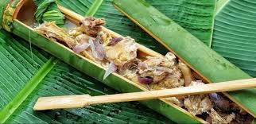

Must-Try Dishes

Kadios, Baboy, Langka (KBL)
Antique's most iconic dish — a hearty stew made with kadios (pigeon peas), pork, and unripe jackfruit. Soured with batwan fruit, it has a distinct tangy flavor unique to Western Visayas.
Where to try it: Local carinderias and home-style eateries in San Jose de Buenavista.

Binacol
A unique chicken soup cooked inside a bamboo tube with young coconut water and tender coconut meat. The bamboo lends a subtle smoky aroma to this soulful Antiqueño comfort food.
Where to try it: Tibiao eco-lodges, farm stays, and local food stops.

Bukayo
A classic Filipino sweet made from strips of young coconut cooked in muscovado sugar. Antique's version is soft, chewy, and deeply caramelized — a beloved pasalubong for visitors.
Where to try it: Public markets and pasalubong stalls in San Jose, Pandan, and nearby towns.

Kinunot na Pagi
A stingray dish slow-cooked in coconut milk with malunggay leaves. The tender, flaky fish absorbs the rich coconut sauce beautifully, making it a prized coastal specialty of Antique.
Where to try it: Coastal eateries and local seafood stalls in Antique's seaside municipalities.

Biscocho
Twice-baked bread toasted to a golden crisp and brushed with butter and sugar. A staple snack of Western Visayas, Antique's biscocho is light, crunchy, and irresistibly addictive.
Where to try it: Bakeries, public markets, and pasalubong centers around San Jose de Buenavista.

Herbal Kawa Tea
Complementing the famous kawa bath experience, locally sourced herbal teas made from lemongrass, ginger, and pandan are served warm — a soothing drink to complete your Tibiao visit.
Where to try it: Kawa bath resorts and eco-tourism lodges in Tibiao.